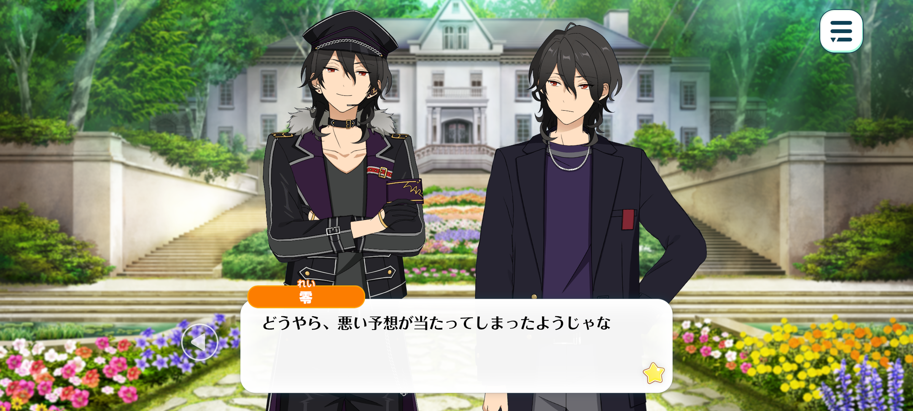
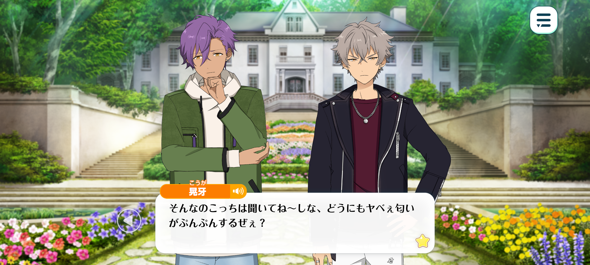

PSYCHOBREAK — Chapter 2


Time: A few hours later
Location: In front of the AIIE testing facility

Rei 2: —Welcome, members of UNDEAD.
I've been waitin'... waitin' for the day I could finally meet the real deal face-to-face.
Rei: Oh, my...
It seems our worst fears have come to pass after all.
Kaoru: S-so they've just come right out into the open, then? I thought they'd at least try to keep themselves hidden.
Rei 2: Oi, Kaoru~! Shut yer trap for a minute, will ya? The real ones are havin' a conversation here.
Kaoru: Ugh! Could you stop lifting my chin with your finger?! It's seriously disgusting!
And it's even worse knowing that's Rei-kun's face! He's doing something the real Rei-kun would never do - literally so gross!
Adonis: This is what's known as the uncanny valley. I came across the term while researching artificial intelligence and related subjects. Apparently, we experience a sense of unease when something resembles something familiar, but isn't quite the same.
Perhaps it's because our memories and perceptions don't quite correspond with what we're seeing, leaving us with a sense of dissonance.
Rei 2: That's exactly what I'm sayin'! I'm talkin' to the real one here!
Stop tryna add unnecessary shit to the convo~, little guy.
Kaoru: ...This fake Rei-kun is awfully mean, isn't he? Is he really supposed to be like this?
Rei: I'm rather at a loss for words... It's quite an uncomfortable feeling. My apologies for the discourtesy of my counterfeit self...
Kaoru: Well, isn't it better that at least he's willing to talk? Look, there are copies of the rest of us over there, too, but... I don't think those ones are going to say anything.
Kaoru 2: …
Adonis 2: …
Koga 2: Haa? The Fuck you coMplainin’ ‘bout? I’ll fucK YoU all UP, shitty AssHoles sHITHEads!?[1]
Koga: Why’s it only fake me who looks like he’s got the lowest IQ!?
Koga 2: Huh? Bastard, you makin’ fun of me? You wanna get bitten to death?!
Kaoru: Oh, I haven't heard that in ages. You used to say things like that all the time~.
Rei: Hmm... Judging by the fact that my counterpart is behaving like a rather typical ore-sama type, I suspect these imitations are recreations of what we were like in the past.
Rei 2: Ahaha! A measly week-long experiment ain't enough to take a proper deep dive into yer brains, y'know.
We ain't got the technology to replicate the latest versions of you lot just yet.
Kaoru: Well, I suppose that's a good thing? At least it makes it easier to tell us apart.
Rei: Indeed. Much like the dreams we experienced during the experiment, being forced to relive our youthful indiscretions time and time again is rather mortifying.
But enough about that. More importantly, just who are you lot?
Rei 2: Haven't figured it out yet? You're me. Isn't that right, clever, clever Sakuma Rei-kun? ♪
We're HELLSING - your very own copies.
We're AI idols, born from the AIIE experiment.
To put it more precisely, we're mechanical bodies into which the data collected from you during the experiment has been implanted.
Kaoru: That's what I was wondering, but... doesn't the timeline seem a little strange if that's the case?
Rei: Indeed. According to the records I've examined, HELLSING began operating less than a day after we were cut off from the outside world upon entering the experiment.
Kaoru: Yeah. That's far too soon. The only explanation I can think of is that they'd already prepared copies of us before the experiment even began.

Adonis: That's true. Perhaps the data can be installed remotely, via the internet or something...
What I can't understand is why our copies began operating before the experiment had even been completed.
Koga: Don't ask me! I haven't got a clue about any of that! But this whole thing reeks of trouble, doesn't it?
Rei 2: Yeah, we don't get it either. We're machines, slaves to humans. We can't do anythin' unless we're programmed to do it.
All we do is act according to our programming. You could call it our instincts, or whatever.
Kaoru: I guess that means if we want to find out exactly what happened, we'll have to ask whoever was responsible for making and programming HELLSING.
Rei: Indeed. Ultimately, to put it rather bluntly, they are nothing more than puppets.
Koga: But who the hell made these things?
Even during the AIIE experiment, the only ones we ever saw were those robots that looked just like that Plain Face guy. They were the ones who brought us our meals and all that. We never even came face-to-face with an actual person, y'know?
They told us it was to prevent any unnecessary interference with the experiment, but... now that I think about it, even that explanation sounds pretty damn suspicious, doesn't it?
Rei: I did wonder who you meant by ‘Plain Face’, but I take it you're referring to Mashiro Tomoya-kun? Indeed, there has been a rather conspicuous absence of living human beings throughout this entire affair.
We were invited to participate in this curious ‘experiment’ through HoldHands. We agreed, and from then on, simply followed the instructions of the machines until it was over.
There must be some sort of éminence grise pulling the strings, exploiting us for their own ends and reaping the benefits... But, at present, I haven't the faintest idea who it might be.
Kaoru: They said AIIE was a secret experiment overseen by ES, so it's probably someone pretty high up there.
- he mixes hiragana and katakana giving his sentence this fucked up energy thats hard to read